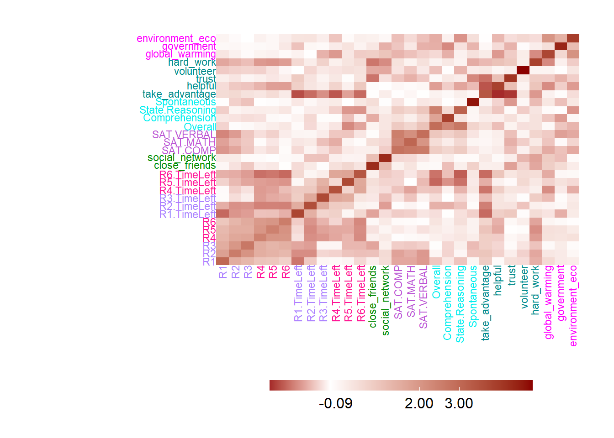
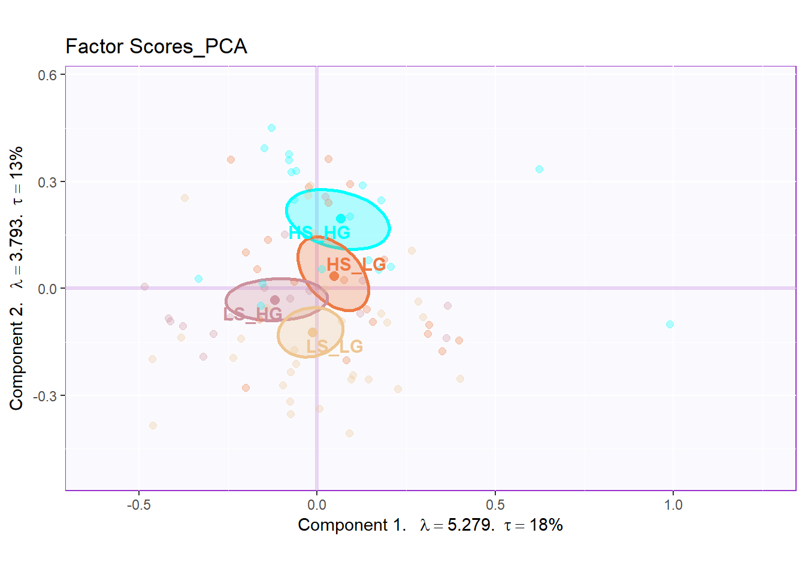
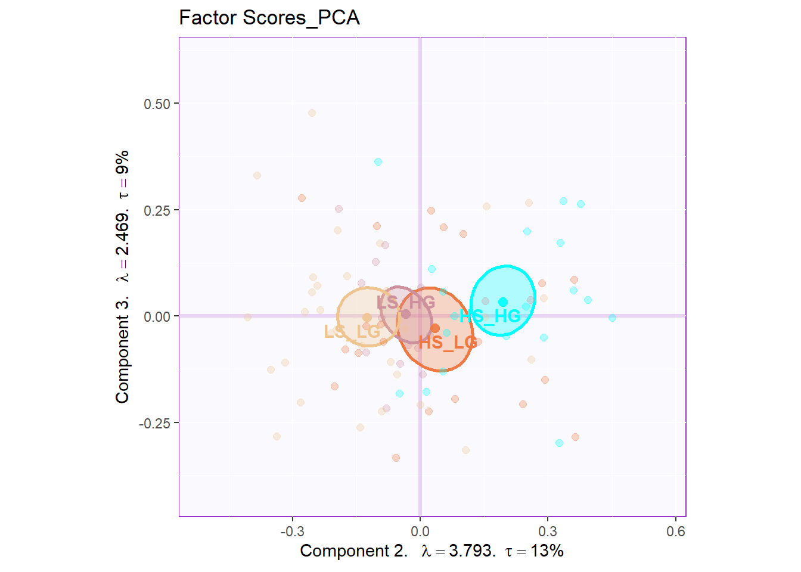
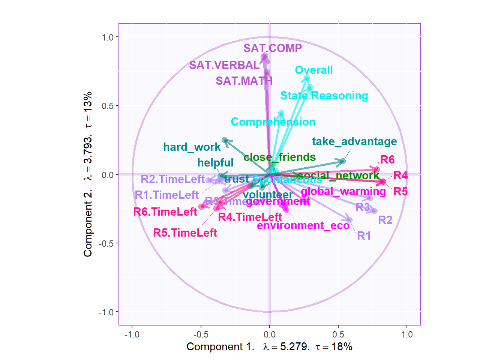
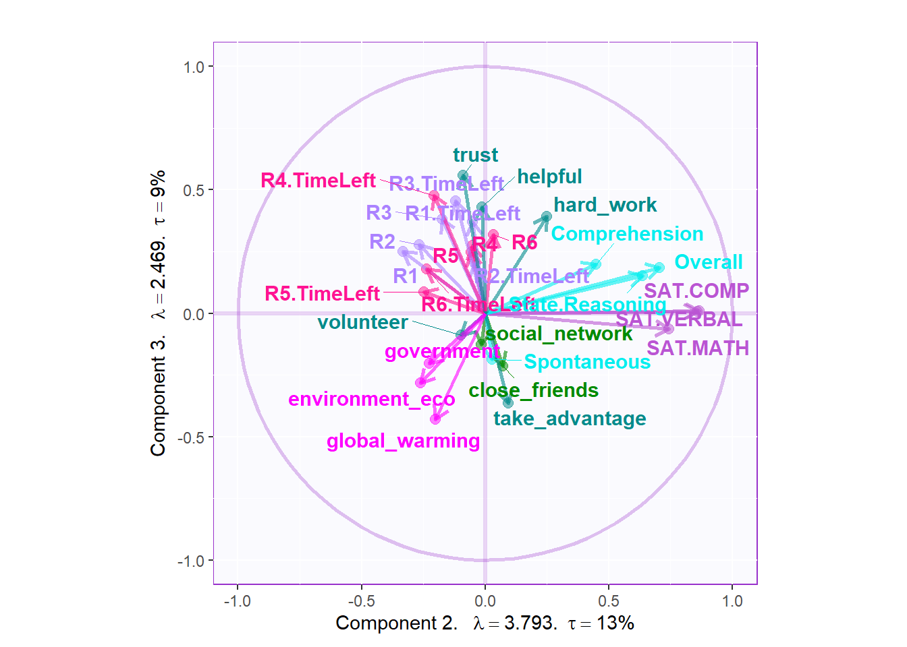
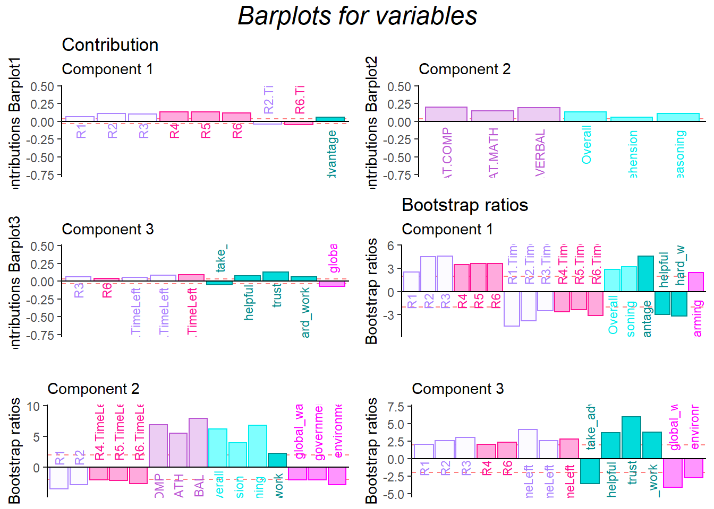

Chapter 4 Principal Component Analysis
4.1 Introduction of PCA
In the first statistical method, I will start from Principal Component Analysis (PCA).PCA is a common analysis I used for data exploration and dimensionality reduction. I aim to use PCA to extract important information , and find the similarity from sets of variables I have. Since the origin of PCA can be traced to concepts of Correlation and Linear Analysis, I can see large overlap between PCA and other linear methods. However, the uniqueness of the PCA relies on its calculation process: its goal is to convert the original data table (information) into new orthogonal variables. These new orthogonal variables will have same numbers with the original data table but generally the first few variables will explain most of the total variance for the whole data table, which I called them principal components in our analysis. Generating these new principal components will be beneficial for us to know the what’s dominant features in our data set and get rid of these noisy ones. Let’s me give an example: In questionnaire study, sometimes I will ask questions with high similarity:
1. Do you like pet?
2. Do you enjoying playing with your pet in your spare time?
If I am a dog person, I will definitely answer “yes” at the first question and “My pleasure” at the second one. Reversely, If I am allergic to dog’s hair and was bitten by a dog during my childhood, I may answer “No” and “Absolutely No” at the two questions. I bet 99% people will have consistent answers for the two questions.
Except questionnaire study, there are many other place I might need to reduce the similarity and extract the most important information from our data set. In neuroimaging study, sometimes I will need to find out which brain regions will have similar activation; In real life research, after collecting hundreds of participants’ data, I want to know if male/female, or young/aged will have significant separation on some biological characteristics. PCA will be a good fit to reduce these kinds of redundancy. By looking into the Scree Plot2.1, I can know how many variables explain much more variance than others. By looking into the Loading2.6, I can know the relationship among different column variables. By looking into the Factor Scores2.4 and Contribution Barplot2.7, I can know which component are more closely associated with the separation of different groups. I will introduce these concepts in details in the following content.
Overall, PCA is a powerful statistical tool which is designed to help us find out the connections between variables and observation, and connection among multiple variables in single numeric data table (In the following chapter, I will mention more about the multiple data tables).
4.2 Computing
The first step I need to do is to run PCA analysis. In this part, I will use some trick to make my computational life easier. All important matrix will be stored as a short character for convenience.
- fs: factor scores
- eigs: eigenvalue
- tau: represents how many varience explained by the factor
- p.vals: the p value for the scree plot, which can tell us that what’s the significant components in our results.
- boot.ratios: it is bootstrap ratio matrix helps us to generate bootstrap barplot in the end.
- cj: contribution ratio for the column variables
- fj: factor scores of column variables
res.PCA <- epPCA(DATA = exp.neg[7:35], center = TRUE,
scale = 'SS1',
DESIGN = exp.neg$group, graphs = FALSE)
res.PCA.inference <- epPCA.inference.battery(DATA = exp.neg[7:35],
center = TRUE,
scale = 'SS1',
DESIGN = exp.neg$group,
graphs = FALSE)
fs <- res.PCA$ExPosition.Data$fi
eigs <- res.PCA$ExPosition.Data$eigs
tau <- res.PCA$ExPosition.Data$t
p.eigs <- res.PCA.inference$Inference.Data$components$p.vals
eigs.permu <- res.PCA.inference$Inference.Data$components$eigs.perm
boot.ratios <- res.PCA.inference$Inference.Data$fj.boots$tests$boot.ratios
cj <- res.PCA$ExPosition.Data$cj
fj <- res.PCA$ExPosition.Data$fj4.3 Heatmap
In the heatmap part, the input data is XTX, which represent the co-variance Matrix or the correlation matrix in PCA. From the heatmap, I can know that some variables are closely correlated with each other, such as game performance, time usage, personality trait and attitude toward global environment. The heatmap can give us a hint about the following PCA results.
# plot
pca.xtx <- as.matrix(t(scale(exp.neg[,7:35],
center = TRUE,
scale = TRUE)) %*% scale(exp.neg[,7:35],
center = TRUE,
scale = TRUE))
plot.heatmap(DATA = pca.xtx,
xcol = m.color.design,
ycol = m.color.design,
textsize = 3)
4.4 Scree Plot
For the scree plot and permutation test, I can know how many components are statistically significant in our study, and whether the results is stable. Permutation test is designed for a NS test, to test the null hypothesis. By repeatedly sampling from data (putting it back, compared to bootstrap ratio), it will generate a new frequency distribution about the overall probability of outcome I observed. By comparing the value in the distribution range, I can know how confident I are to reject the null hypothesis and how much probability I have to make the typeI error. From the results below, I conclude that
4.5 Factor Scores
The factor scores is the most important part in our PCA analysis. As you can see, with the help of the function, things become such easy to have our factor scores plot. In the two plot below, I can know that they are separated with each other in great extend. The dimension 2 perfectly distinguishes Hig social intelligence and High general intelligence participants with Low social intelligence and Low general intelligence ones. The interesting thing is that it looks like a gradient distribution: HIGH_HIGH at the top, LOW_LOW at the bottom, and HIGH_LOW in the middle. From the factor scores plot, I can also know that high social intelligence is closer to double high participants. However, the Dimension 1 and Dimension 3 are not much informative for us from the plots.


4.6 Loading
From the loading plot, I can see that they are some determined factors associated more with dimension 2: The SAT results and empathy are related with dimension 2, which represents that the two aspects are important for the separation of the groups.


4.7 Contriution and Bootstrap Ratio Barplots
From the contribution and bootstrap ratio barplots, I can know that the first component is closely related with participants’ game performance. SAT results and empathy related ability are significantly contributing to component2, which aligns with the conclusion of the published article.
plot.cb(cj=cj,
fj=fj,
col = m.color.design,
boot.ratios = boot.ratios,
signifOnly = TRUE,
fig = 3,
horizontal = TRUE,
colrow = "col")
4.8 Conclusion
It is easy to observe that they are connection between the game performance results and some personality or attitude variables. However, it is worth to mention that currently the separation doesn’t represent that I have already had the evidence the collective action will be affected by social intelligence and general intelligence. Please remember our group variable is GPA and Emotion Processing Ability, the two variables are naturally correlated with the previous two aspects. I need more evidence on other variables to prove that I are right.